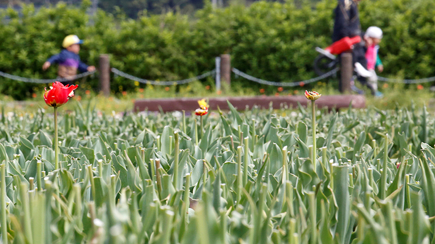

Japón corta más de 100 mil tulipanes para evitar llegada de admiradores y posibles contagios de covid-19
La oficina de turismo de una localidad cercana a Tokio decidió tomar la medida cuando empezó a registrar un aumento de los turistas que acudían al lugar en plena pandemia.
Ante los casos de contagiados de coronavirus (covid-19) que se han reportado en Japón, las autoridades de una localidad cercana a Tokio decidieron cortar más de sus 100 mil tulipanes para evitar que los ciudadanos llegaran a admirar el apreciado paisaje que dejan estas flores en esta época.
Tradicionalmente, miles de flores cubren los campos de la ciudad de Sakura, al este de Tokio, en estas fechas, algo que atrae a turistas de todos lados que acuden para poder ver el espectáculo de colores que inunda la localidad.
Sin embargo, ante las medidas que ha estado adoptando Japón para evitar más contagios de coronavirus, funcionarios de turismo decidieron cortar las flores y que no siguieran siendo una atracción peligrosa. Además, las autoridades decidieron cancelar el festival anual del tulipán que se realizaba en los jardines de Sakura Furusato Hiroba.
Las flores cortadas serán donadas a un jardín infantil, indicaron desde la oficina de turismo.
"Muchos visitantes llegaron el fin de semana cuando las flores estaban en pleno crecimiento. Se convirtió en una reunión masiva, por lo que tuvimos que tomar la decisión de cortar las flores"
Sakiho Kusano, funcionario de turismo de la ciudad, según publicó National Post. cuadrados que se generan en esta época del año, solo hay unos pocos visitantes.
